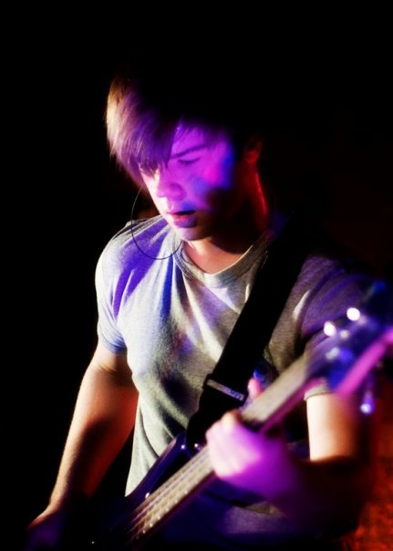
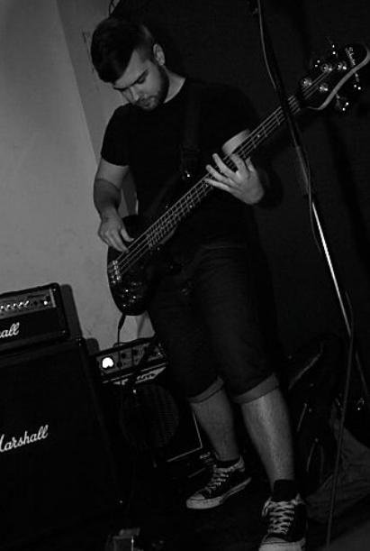
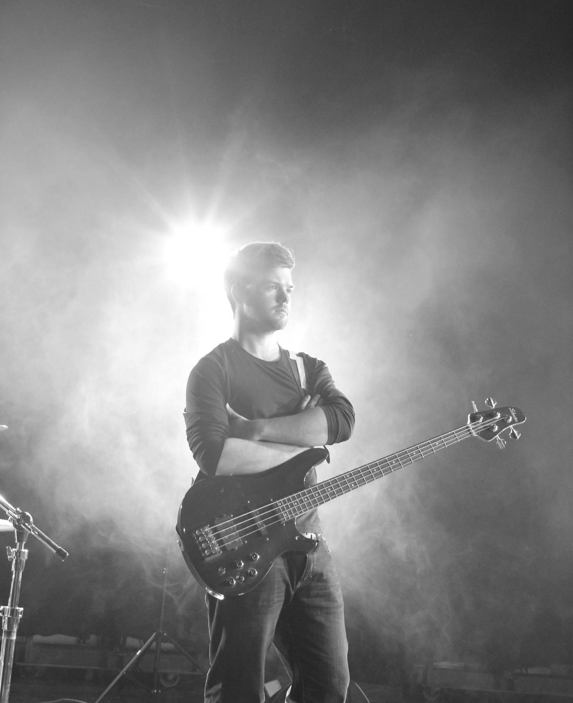
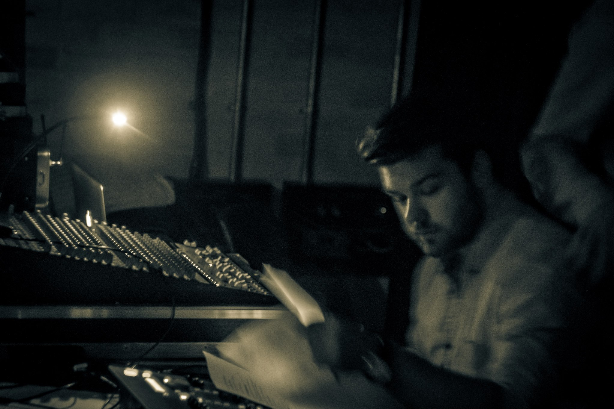

Media
Playing, performing and staying involved in music.
A small collection of live performance, rehearsal and musical moments from Hooked On Bass.
Active Playing
Still learning, still gigging, still showing up.
Alongside teaching, I continue to stay active in live music through function work, original music projects and local events.
I currently dep for multiple wedding bands, play in an originals band around Derby and Nottingham, and regularly attend open mic nights as the house bassist.
Staying involved in live music helps keep lessons practical, relevant and connected to real playing situations.
Gallery
Timeline - Ages 14 to now




Get In Touch
Interested in lessons or bass servicing?
Feel free to send me a message about lessons, servicing work or general enquiries.
hookedonbassuk@gmail.com